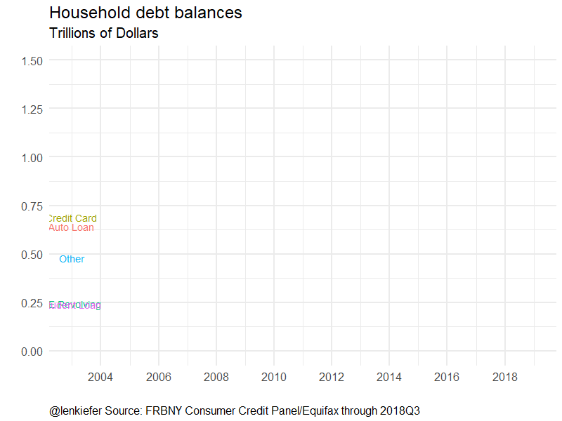
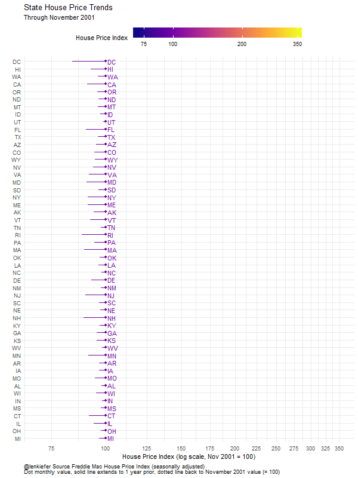

At the start of the year, the R package gganimate hit CRAN. See this announcement blog post with some examples.
In this space, I’ve shared several posts on animation see tags. But I haven’t been using gganimate. Instead, I took a more direct approach building the animations via loops and trying to tween directly if I wanted a smooth animation. This level of control is nice, but frankly the defaults in gganimate work better than many of my attempts to hand craft it. They also run faster than the code I’ve shared.
As described in the Data Imaginist blog post above, the new version of gganimate makes several changes in how the package aworks, establishing a grammar of animation. I think this approach is great, but the fact that gganimate was for a long time only available on Github prevented me from using it. Now that it’s on CRAN I have an easier time making sure I have the same version on all my machines.
I’ve been enjoying the new package and wanted to share a few simple examples here for housing and mortgage market data. Let’s give it a try.
Household debt balances
Earlier today I tweeted:
Household debt balances (excluding mortgages) pic.twitter.com/gJbL5WIv05
— 📈 Len Kiefer 📊 (@lenkiefer) January 13, 2019
Let’s make this animation.
Data
This was a remake of a chart we’ve made a couple times, for example here, (note the images in that post are lost due to a blog conversion).
We will use data from the New York Fed’s Quarterly Report on Household Debt and Credit. These data come from the Center for Microeconomic Data based on credit records from Equifax and are available through the Center for Microeconomic Data.
The data can be downloaded via spreadsheet here. But I recently got a new computer, and I haven’t decided to opt into Excel yet. So I’m going to use datapasta to copy the data straight into my R code. These data were downloaded on January 13, 2019, so they may not reflect future revisions.
Using datapasta, I copied the data direct from the spreadsheet into a data fram like so:
Click for R code to wrangle data
# Load libraries ----
library(tidyverse)
library(gganimate)
library(ggrepel)
# load data via data pasta
df <-
tibble::tribble(
~V1, ~V2, ~V3, ~V4, ~V5, ~V6, ~V7, ~V8, ~V9, ~V10, ~V11, ~V12, ~V13, ~V14, ~V15, ~V16, ~V17, ~V18, ~V19, ~V20, ~V21, ~V22, ~V23, ~V24, ~V25, ~V26, ~V27, ~V28, ~V29, ~V30, ~V31, ~V32, ~V33, ~V34, ~V35, ~V36, ~V37, ~V38, ~V39, ~V40, ~V41, ~V42, ~V43, ~V44, ~V45, ~V46, ~V47, ~V48, ~V49, ~V50, ~V51, ~V52, ~V53, ~V54, ~V55, ~V56, ~V57, ~V58, ~V59, ~V60, ~V61, ~V62, ~V63, ~V64, ~V65, ~V66,
"Mortgage", NA, NA, 4.942, 5.08, 5.183, 5.66, 5.84, 5.967, 6.21, 6.36, 6.512, 6.696, 6.906, 7.102, 7.436, 7.76, 8.045, 8.234, 8.422, 8.706, 8.925, 9.101, 9.234, 9.273, 9.294, 9.257, 9.135, 9.063, 8.944, 8.843, 8.834, 8.703, 8.609, 8.452, 8.544, 8.516, 8.402, 8.268, 8.187, 8.147, 8.028, 8.033, 7.932, 7.841, 7.897, 8.049, 8.165, 8.096, 8.131, 8.17, 8.171, 8.116, 8.26, 8.249, 8.369, 8.362, 8.35, 8.48, 8.627, 8.691, 8.743, 8.882, 8.939, 8.999, 9.14,
"HE Revolving", NA, NA, 0.242, 0.26, 0.269, 0.302, 0.328, 0.367, 0.426, 0.468, 0.502, 0.528, 0.541, 0.565, 0.582, 0.59, 0.603, 0.604, 0.605, 0.619, 0.631, 0.647, 0.663, 0.679, 0.692, 0.705, 0.714, 0.713, 0.708, 0.706, 0.695, 0.683, 0.673, 0.668, 0.641, 0.625, 0.639, 0.627, 0.612, 0.589, 0.573, 0.563, 0.552, 0.54, 0.535, 0.529, 0.526, 0.521, 0.512, 0.51, 0.51, 0.499, 0.492, 0.487, 0.485, 0.478, 0.472, 0.473, 0.456, 0.452, 0.448, 0.444, 0.436, 0.432, 0.422,
"Auto Loan", NA, NA, 0.641, 0.622, 0.684, 0.704, 0.72, 0.743, 0.751, 0.728, 0.725, 0.774, 0.83, 0.792, 0.788, 0.796, 0.821, 0.821, 0.794, 0.807, 0.818, 0.815, 0.808, 0.81, 0.809, 0.791, 0.766, 0.743, 0.739, 0.722, 0.705, 0.702, 0.71, 0.711, 0.706, 0.713, 0.73, 0.734, 0.737, 0.75, 0.768, 0.783, 0.794, 0.814, 0.845, 0.863, 0.875, 0.905, 0.934, 0.955, 0.968, 1.006, 1.045, 1.064, 1.071, 1.103, 1.135, 1.157, 1.167, 1.19, 1.213, 1.221, 1.229, 1.238, 1.265,
"Credit Card", NA, NA, 0.688, 0.693, 0.693, 0.698, 0.695, 0.697, 0.706, 0.717, 0.71, 0.717, 0.732, 0.736, 0.723, 0.739, 0.754, 0.767, 0.764, 0.796, 0.817, 0.839, 0.837, 0.85, 0.858, 0.866, 0.843, 0.824, 0.812, 0.795, 0.762, 0.744, 0.731, 0.73, 0.696, 0.694, 0.693, 0.704, 0.679, 0.672, 0.674, 0.679, 0.66, 0.668, 0.672, 0.683, 0.659, 0.669, 0.68, 0.7, 0.684, 0.703, 0.714, 0.733, 0.712, 0.729, 0.747, 0.779, 0.764, 0.784, 0.808, 0.834, 0.815, 0.829, 0.844,
"Student Loan", NA, NA, 0.241, 0.243, 0.249, 0.253, 0.26, 0.263, 0.33, 0.346, 0.364, 0.374, 0.378, 0.392, 0.435, 0.439, 0.447, 0.482, 0.506, 0.514, 0.529, 0.548, 0.579, 0.586, 0.611, 0.639, 0.663, 0.675, 0.695, 0.721, 0.758, 0.762, 0.778, 0.812, 0.839, 0.851, 0.87, 0.874, 0.904, 0.914, 0.956, 0.966, 0.986, 0.994, 1.027, 1.08, 1.111, 1.118, 1.126, 1.157, 1.189, 1.19, 1.203, 1.232, 1.261, 1.259, 1.279, 1.31, 1.344, 1.344, 1.357, 1.378, 1.407, 1.405, 1.442,
"Other", NA, NA, 0.478, 0.486, 0.477, 0.449, 0.447, 0.423, 0.41, 0.423, 0.394, 0.402, 0.405, 0.416, 0.418, 0.423, 0.442, 0.406, 0.404, 0.408, 0.413, 0.422, 0.415, 0.401, 0.412, 0.412, 0.409, 0.389, 0.382, 0.379, 0.363, 0.349, 0.343, 0.341, 0.329, 0.33, 0.327, 0.33, 0.319, 0.312, 0.311, 0.317, 0.307, 0.296, 0.304, 0.317, 0.314, 0.323, 0.327, 0.335, 0.329, 0.339, 0.351, 0.351, 0.354, 0.356, 0.367, 0.377, 0.367, 0.378, 0.386, 0.389, 0.385, 0.39, 0.399,
"Total", NA, NA, 7.231, 7.384, 7.555, 8.066, 8.289, 8.46, 8.833, 9.042, 9.207, 9.492, 9.792, 10.002, 10.382, 10.747, 11.111, 11.313, 11.495, 11.85, 12.133, 12.372, 12.537, 12.599, 12.675, 12.67, 12.53, 12.407, 12.279, 12.166, 12.117, 11.943, 11.844, 11.713, 11.754, 11.73, 11.661, 11.537, 11.436, 11.384, 11.31, 11.341, 11.231, 11.153, 11.28, 11.521, 11.65, 11.632, 11.71, 11.827, 11.851, 11.853, 12.065, 12.116, 12.252, 12.287, 12.35, 12.576, 12.725, 12.839, 12.955, 13.148, 13.211, 13.293, 13.512
)
df2 <- df %>% group_by(V1) %>% gather(var,value,-V1) %>% filter(! var %in% c("V2","V3")) %>%
mutate(date=seq.Date(as.Date("2003-01-01"),as.Date("2018-09-01"),by="3 months"))
# take a look
knitr::kable(head(df2))| V1 | var | value | date |
|---|---|---|---|
| Mortgage | V4 | 4.942 | 2003-01-01 |
| HE Revolving | V4 | 0.242 | 2003-01-01 |
| Auto Loan | V4 | 0.641 | 2003-01-01 |
| Credit Card | V4 | 0.688 | 2003-01-01 |
| Student Loan | V4 | 0.241 | 2003-01-01 |
| Other | V4 | 0.478 | 2003-01-01 |
Now we can make a static image:
ggplot(data=df2 %>% filter(!V1 %in% c("Mortgage","Total")), aes(x=date,y=value,color=V1,label=V1))+
geom_line()+
# put label at end of line
geom_text_repel(data=. %>% filter(date==max(date)), size=5)+
theme_minimal(base_size=16)+ #use minimal theme from ggthemes library
scale_y_continuous(limits=c(0,1.5),breaks=seq(0,1.5,.25))+
theme(plot.title=element_text())+theme(plot.caption=element_text(hjust=0,vjust=1,margin=margin(t=10)))+
theme(plot.margin=unit(c(0.25,0.25,0.25,0.25),"cm"))+
scale_x_date(date_breaks="2 years",date_labels="%Y")+
coord_cartesian(xlim=c(as.Date("2003-01-01"),as.Date("2018-12-31")))+
theme(legend.position="none")+
labs(title="Household debt balances",
subtitle="Trillions of Dollars",
x="",y="",caption="@lenkiefer Source: FRBNY Consumer Credit Panel/Equifax through 2018Q3") 
To animate it, we need to make some slight tweaks. I want the image to gradually reveal each data point on the line and have the label at the endpoint. To do so, we put a label on each data point, but gganimate will only show the last.
The following code will animate our line plot. Click for R code to animate plot
anim <-
ggplot(data=df2 %>% filter(!V1 %in% c("Mortgage","Total")), aes(x=date,y=value,color=V1,label=V1))+
geom_line()+
geom_text(size=5)+
theme_minimal(base_size=20)+ #use minimal theme from ggthemes library
theme(plot.title=element_text())+theme(plot.caption=element_text(hjust=0,vjust=1,margin=margin(t=10)))+
theme(plot.margin=unit(c(0.25,0.25,0.25,0.25),"cm"))+
scale_x_date(date_breaks="2 years",date_labels="%Y")+
coord_cartesian(xlim=c(as.Date("2003-01-01"),as.Date("2018-12-31")))+
scale_y_continuous(limits=c(0,1.5),breaks=seq(0,1.5,.25))+
theme(legend.position="none")+
labs(title="Household debt balances",
subtitle="Trillions of Dollars",
x="",y="",caption="@lenkiefer Source: FRBNY Consumer Credit Panel/Equifax through 2018Q3") +
transition_reveal(date)
# use end_pause=20 to hold last frame for 20 frames (~2 seconds)
animate(anim, end_pause=20,width=800,height=600)
anim_save(file="credit18Q3.gif", animation = last_animation())
House price animation
Another animation I like is this one of house prices:
👀👀👀
— 📈 Len Kiefer 📊 (@lenkiefer) January 9, 2019
📉🏠📈
👀👀👀 pic.twitter.com/9EbA94zO8K
Get data
The data I use for this animation is from the Freddie Mac House Price Index. I convinced my colleagues to post a master file as .csv that you can more easily read into your computer. That file is here (.csv). It contains the seasonally adjusted and non-seasonally adjusted house price index for the U.S., all 50 states plus the District of Columbia and over 300 metropolitan statistical areas (MSA).
For this animation we’ll look at state values. I“m also going to use data.table::fread to read in the file, and use some data.table syntax to filter the data.
Click for R code to get house price data
# get house price data
library(data.table)
dt <- fread("http://www.freddiemac.com/research/docs/fmhpi_master_file.csv")
knitr::kable(head(dt))| Year | Month | GEO_Type | GEO_Name | GEO_Code | Index_NSA | Index_SA |
|---|---|---|---|---|---|---|
| 1975 | 1 | State | AK | . | 34.43294 | 34.63120 |
| 1975 | 2 | State | AK | . | 34.93477 | 35.10387 |
| 1975 | 3 | State | AK | . | 35.44898 | 35.49146 |
| 1975 | 4 | State | AK | . | 35.98482 | 35.87223 |
| 1975 | 5 | State | AK | . | 36.56992 | 36.28356 |
| 1975 | 6 | State | AK | . | 37.19824 | 36.70189 |
As described in the FMHPI documentation, GEO_Type determines the geogrpahy level (US, State, CBSA). We want to filter on states, and only use data from 2001 forward. We’ll also create a date variable from Year and Month.
The lastest available data is for November 2018, and I want to focus on yearly changes in the index, so we’ll filter on Month==11 and reindex so November 2001=100. We could inclue all months, but that would greatly increase the required number of frames for our animation (and make the filesize larger).
Finally, I’m going to create a lagged hpi that is the index value 1 year ago.
# filter on GEO_Type=State Year >=2000
dt2 <- dt[GEO_Type=="State"& Year>=2000,][ , date:=as.Date(ISOdate(Year,Month,1))]
# create new index (Index_SA Nov 2001 = 100)
dt3 <- dt2[Month==11,][ , hpi:=100*Index_SA/Index_SA[Year==2001],by="GEO_Name"][order(date),]
dt3 <- dt3[, hpi_lag:=lag(hpi), by="GEO_Name"][Year>2000,]
knitr::kable(head(dt3))| Year | Month | GEO_Type | GEO_Name | GEO_Code | Index_NSA | Index_SA | date | hpi | hpi_lag |
|---|---|---|---|---|---|---|---|---|---|
| 2001 | 11 | State | AK | . | 106.1025 | 105.8216 | 2001-11-01 | 100 | 94.00168 |
| 2001 | 11 | State | AL | . | 102.0308 | 101.8477 | 2001-11-01 | 100 | 98.02521 |
| 2001 | 11 | State | AR | . | 103.1882 | 103.0103 | 2001-11-01 | 100 | 96.73593 |
| 2001 | 11 | State | AZ | . | 105.0108 | 104.6923 | 2001-11-01 | 100 | 95.04149 |
| 2001 | 11 | State | CA | . | 109.2943 | 108.8226 | 2001-11-01 | 100 | 90.84298 |
| 2001 | 11 | State | CO | . | 105.7688 | 105.4673 | 2001-11-01 | 100 | 94.28430 |
Now we can make a static version of our plot for November 2018.
ggplot(data=dt3%>% filter(Year==2018),
aes(x=hpi,
label=paste0(" ",GEO_Name," "),
color=log(hpi),
# have labels on left right depending on trend
hjust=ifelse(hpi>hpi_lag,0,1),
y=fct_reorder(GEO_Name,hpi,last),
yend=fct_reorder(GEO_Name,hpi,last)))+
scale_color_viridis_c(name="House Price Index ",
option="C",
limits=c(log(70),log(350)),
breaks=c(log(75),log(100),log(200),log(350)),
labels=c(75,100,200,350)
)+
geom_segment(alpha=0.8,linetype=2, aes(xend=100))+
geom_segment(aes(xend=hpi_lag))+
geom_point()+
geom_text()+
scale_x_log10(limits=c(70,350),breaks=seq(75,350,25))+
theme_minimal()+
labs(x="House Price Index (log scale, Nov 2001 = 100)",
y="",
title="State House Price Trends",
subtitle="November 2018",
caption="@lenkiefer Source Freddie Mac House Price Index (seasonally adjusted)\nDot monthly value, solid line extends to 1 year prior, dotted line back to November 2001 value (= 100)" )+
theme(plot.caption=element_text(hjust=0),
legend.key.width=unit(2,"cm"),
legend.position="top")
Animate it
To animate the code run this:
Click for R code to animate chart
anim <-
ggplot(data=dt3,
aes(x=hpi,
label=paste0(" ",GEO_Name," "),
color=log(hpi),
# have labels on left right depending on trend
hjust=ifelse(hpi>hpi_lag,0,1),
y=fct_reorder(GEO_Name,hpi,last),
yend=fct_reorder(GEO_Name,hpi,last)))+
scale_color_viridis_c(name="House Price Index ",
option="C",
limits=c(log(70),log(350)),
breaks=c(log(75),log(100),log(200),log(350)),
labels=c(75,100,200,350)
)+
geom_segment(alpha=0.8,linetype=2, aes(xend=100))+
geom_segment(aes(xend=hpi_lag))+
geom_point()+
geom_text()+
scale_x_log10(limits=c(70,350),breaks=seq(75,350,25))+
theme_minimal()+
labs(x="House Price Index (log scale, Nov 2001 = 100)",
y="",
title="State House Price Trends",
subtitle="Through November {frame_along}",
caption="@lenkiefer Source Freddie Mac House Price Index (seasonally adjusted)\nDot monthly value, solid line extends to 1 year prior, dotted line back to November 2001 value (= 100)" )+
theme(plot.caption=element_text(hjust=0),
legend.key.width=unit(2,"cm"),
legend.position="top")+
transition_reveal(Year)
animate(anim,start_pause=10, end_pause=20,width=600,height=800,nframes=130)
anim_save(file="hpi_state_nov2018.gif", animation = last_animation())
Thoughts
Animation can be a powerful data visualization tool. And gganimate makes opens up a lot of possiblities. I’ve seen a lot of really cool stuff recently.
Next week I’m headed to Austin for the Rstudio::conf. I’m going to share some housing and economics stuff during the poster session. Hope to say hello if I see you there. There should be a lot to learn, and maybe I’ll discover some new animation ideas to try out.